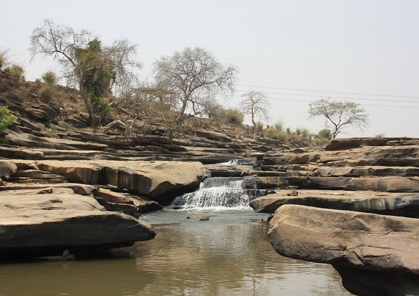

Chitrakoot
Discover a calm spiritual landscape linked to the Ramayana, with sacred hills, riverside spots, and a slower devotional travel experience for families and pilgrims.
Chitrakoot Journey Overview
Chitrakoot is deeply associated with Ramayana tradition and is one of the most peaceful devotional destinations for visitors seeking a slower, meaningful spiritual trip. It is known for sacred ghats, hill viewpoints, religious temples, and places tied to the exile years of Lord Ram. Travelers often choose Chitrakoot for overnight devotion-based travel, family pilgrimage, and combined outstation packages from Ayodhya.
Best For
Devotional travelers, families, senior pilgrims, and peaceful short escapes.
Suggested Trip Length
2 days for key temples, ghats, and a relaxed spiritual itinerary.
Travel Support
Outstation cab package, hotel help, local stop planning, and return transfer.
Chitrakoot Moments



Admin Photo Upload
Upload multiple Chitrakoot photos and preview them before updating the page.
Show Chitrakoot Travel Videos
Upload a local clip or add a YouTube link for temple routes, spiritual surroundings, or family travel guides.
Admin Video Upload
Use this block to preview uploaded videos or pasted YouTube links.
Popular Places To Visit
- Ram Ghat
- Kamadgiri Parikrama
- Gupt Godavari
- Hanuman Dhara
Tour Package Details
Chitrakoot packages usually include outstation cab support, temple stops, selected local sightseeing, and optional overnight stay arrangements.
Hotel Options
Budget to deluxe hotel support can be arranged depending on family size, travel dates, and proximity to key darshan routes.
Need a Chitrakoot Cab Package?
Plan outstation travel, stay support, and a clear devotional itinerary with one enquiry.